《软件开发工具实践》实验报告
📋 课程概述
《软件开发工具实践》是一门面向计算机类专业的实践环节课程。通过学习课程7个循序渐进的实验，从Web开发环境搭建出发，逐步掌握代码编辑器使用、静态站点构建与部署、Linux系统管理、远程登录以及自动化部署（CI/CD）等现代软件开发的核心工具链。
七个实验形成了完整的"开发 → 构建 → 部署"工具链闭环：
实验一（Web环境） → 实验二（编辑器） → 实验三（站点构建）
↓
实验四（虚拟机）
↓
实验七（软件部署）← 实验六（远程管理）← 实验五（Linux配置）
🧪 实验一：Web软件开发环境
1.1 实验目的
本次实验旨在搭建一个完整的 Web 软件开发环境，包括安装 Node.js 运行时、npm 包管理器、Git 版本控制工具以及 Hexo 静态博客框架 CLI。通过动手实践，理解 B/S 架构下 Web 开发环境的核心组件构成，掌握从环境安装到项目初始化、本地预览的完整流程。
1.2 实验环境
| 项目 | 配置信息 |
|---|---|
| 操作系统 | Windows 11 专业版 22H2 |
| 运行时 | Node.js v20.x LTS |
| 包管理器 | npm 10.x |
| 版本控制 | Git for Windows 2.x |
| 博客框架 | Hexo CLI 4.x |
| 编辑器 | VS Code |
1.3 实验过程
步骤一：安装 Node.js 与 npm
访问 Node.js 官网 https://nodejs.org/，下载 LTS 版本 的 Windows 安装包。安装时务必勾选 "Automatically install the necessary tools" 并确保 "Add to PATH" 被选中。
安装完成后，打开命令提示符验证：
node -v # 输出 v22.20.0
npm -v # 输出 10.x.x
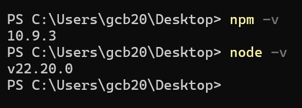
步骤二：配置 npm 镜像源（推荐）
为提高国内下载速度，将 npm 默认镜像源切换为 npmmirror：
npm config set registry https://registry.npmmirror.com
npm config get registry # 验证配置是否生效
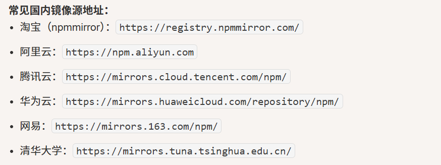
步骤三：安装 Git for Windows
访问 Git 官网 https://git-scm.com/download/win 下载安装包。安装过程中的关键选项：
| 安装页面 | 推荐选择 |
|---|---|
| Select Components | ✅ Git Bash Here + ✅ Git GUI Here |
| Default Editor | VS Code（如已安装） |
| PATH Environment | Git from the command line and also from 3rd-party software |
安装后配置全局用户信息：
git config --global user.name "你的姓名"
git config --global user.email "你的邮箱@example.com"
git --version # 验证安装
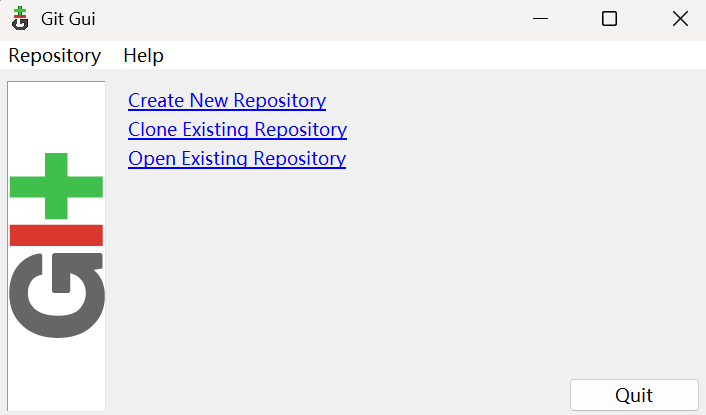
步骤四：安装 Hexo CLI 并初始化博客
npm install -g hexo-cli # 全局安装 Hexo 命令行工具
hexo -v # 验证安装
# 初始化博客项目
cd D:\Blog
hexo init my-blog
cd my-blog
npm install # 安装项目依赖
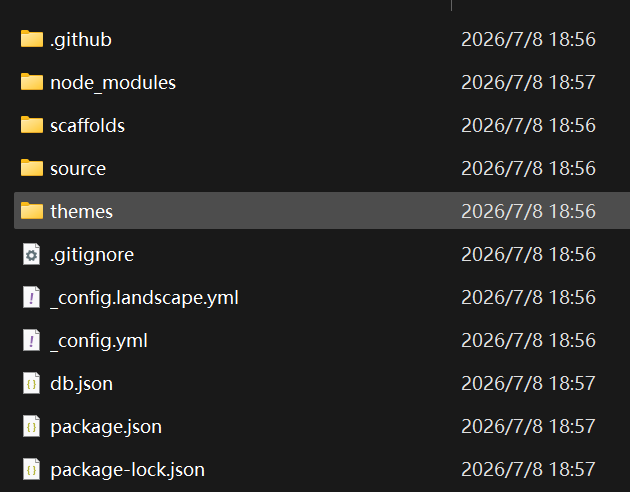
步骤五：本地预览
hexo server # 或简写为 hexo s
浏览器访问 http://localhost:4000，看到默认 Hexo 首页即表示成功。
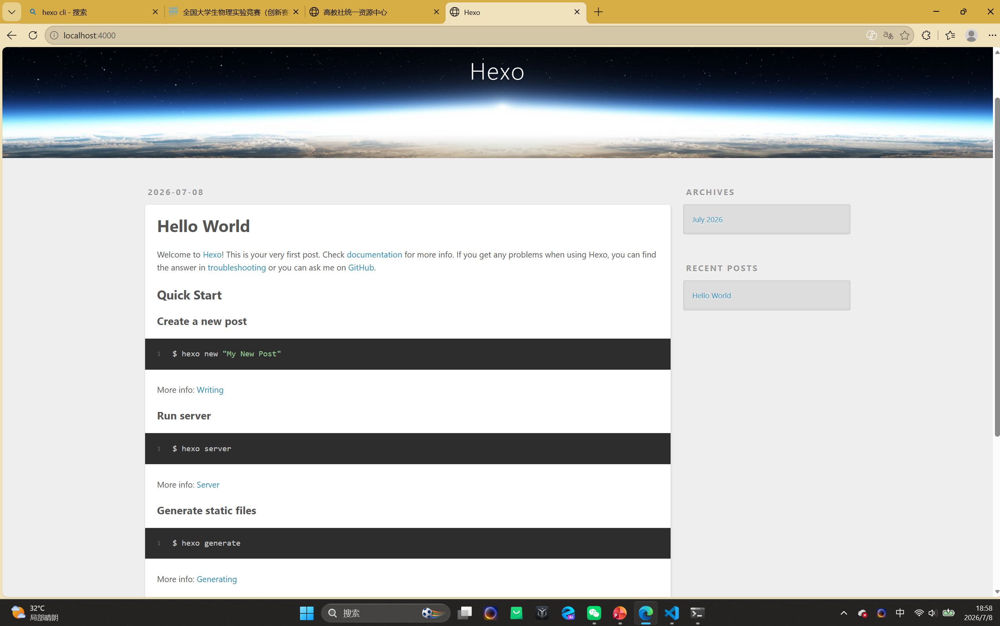
1.4 实验结果
| 测试项 | 验证命令 | 结果 |
|---|---|---|
| Node.js 安装 | node -v |
✅ 成功 |
| npm 安装 | npm -v |
✅ 成功 |
| Git 安装 | git --version |
✅ 成功 |
| Hexo CLI 安装 | hexo -v |
✅ 成功 |
| 博客初始化 | hexo init my-blog |
✅ 成功 |
| 本地预览 | http://localhost:4000 | ✅ 成功 |
Web开发环境核心组件关系图：
┌──────────────┐
│ Node.js │ ← 运行时环境（执行JS代码）
├──────────────┤
│ npm │ ← 包管理器（管理依赖）
├──────────────┤
│ Git │ ← 版本控制（代码管理）
├──────────────┤
│ Hexo CLI │ ← 构建工具（Markdown → HTML）
├──────────────┤
│ Hexo Server │ ← 本地预览服务器
└──────────────┘
1.5 知识总结
1. 静态博客 vs 动态博客：
| 对比维度 | 静态博客（Hexo） | 动态博客（WordPress） |
|---|---|---|
| 页面生成时机 | 构建时预先生成所有页面 | 用户访问时由服务器实时生成 |
| 数据库 | 不需要 | 通常需要 MySQL |
| 访问速度 | 极快（纯静态文件） | 较慢（需执行后端代码+查数据库） |
| 安全性 | 高（无后端攻击面） | 需额外防护（SQL注入、XSS等） |
| 部署方式 | 上传静态文件即可 | 需配置服务器环境和数据库 |
2. 核心命令速查：
| 命令 | 作用 |
|---|---|
node -v |
查看 Node.js 版本 |
npm install -g <package> |
全局安装包 |
npm install |
安装项目依赖 |
npm config set registry <url> |
设置 npm 镜像源 |
git config --global user.name |
设置 Git 用户名 |
hexo init <folder> |
初始化 Hexo 项目 |
hexo server |
启动本地预览服务 |
1.6 出现问题
记录实验中实际遇到的问题和解决方法 - npm install 是否遇到网络超时？镜像源切换后改善了吗？ - 安装 Git 时 PATH 配置是否正确？ - hexo server 启动后端口是否被占用？
常见问题参考：
| 问题现象 | 可能原因 | 解决方法 |
|---|---|---|
'node' 不是内部或外部命令 |
Node.js 未添加到 PATH | 重新安装并确保勾选 "Add to PATH" |
npm install 速度极慢 |
默认使用国外镜像源 | 切换为 npmmirror 镜像源 |
hexo -v 报错 |
Hexo CLI 未全局安装 | 执行 npm install -g hexo-cli |
| 端口 4000 被占用 | 其他程序占用了该端口 | 使用 hexo server -p 4001 换端口 |
1.7 心得体会
本次Web软件开发环境实验，是我第一次完整经历从零搭建开发环境到本地预览的全过程。打开命令行，输入node -v看到版本号跳出的那一刻，一种踏实的成就感油然而生——原来一个可用的开发环境是由这样一个个基础组件支撑起来的。
实验中印象最深的是配置npm镜像源。一开始执行npm install时进度条几乎不动，切换为npmmirror镜像后速度明显提升。这个小小的操作让我体会到：技术学习不仅需要掌握工具本身，更要懂得如何优化工具的使用环境。课程思政常说要“知行合一”，我想，遇到问题、分析原因、动手解决，本身就是知行合一的过程——书本上写“配置镜像源可提高下载速度”只是一句话，真正在命令行里敲下去、亲眼看到速度变化，才算真正理解。
安装Git时配置全局用户信息，git config --global user.name和user.email这两条命令看似简单，却让我意识到：代码从来不是匿名产物，每一行代码背后都对应着一个真实的开发者，都承载着责任。 正如一些课程思政教学案例所强调的，软件开发不仅要掌握技术，更要遵守职业规范、树立责任意识。未来我写的每一行代码，都代表着我的专业素养和职业态度。
通过这次实验，我理解了Web开发环境的核心组件关系——Node.js是运行时，npm是包管理器，Git是版本控制，Hexo是构建工具。每个工具各司其职又协同配合，这种模块化、分层协作的设计思想，也启发我在今后的学习和工作中要学会分工合作、各尽其责。
从命令行中敲下第一行指令，到浏览器里看到Hexo默认首页呈现，这个过程让我真切感受到：技术从来不是冰冷的代码堆砌，而是解决实际问题的工具，是服务他人、服务社会的载体。作为计算机专业的学生，扎实掌握每一项基础技能，既是对自己负责，也是为将来用技术回馈社会打好根基。
🧪 实验二：代码编辑器
2.1 实验目的
本次实验旨在安装并配置 Visual Studio Code（VS Code） 代码编辑器，通过安装 Markdown 相关插件（Markdown All in One、Markdown Preview Enhanced 等），理解代码编辑器插件（Extension）机制的核心概念。同时学习 Markdown 基础语法，掌握使用 VS Code 完成 Markdown 文档编辑、预览和导出的技能。
2.2 实验环境
| 项目 | 配置信息 |
|---|---|
| 操作系统 | Windows 11 专业版 22H2 |
| 编辑器 | Visual Studio Code（最新稳定版） |
| 核心插件 | Markdown All in One、Markdown Preview Enhanced、Paste Image、markdownlint |
2.3 实验过程（图文并茂）
步骤一：安装 VS Code
访问 VS Code 官网 https://code.visualstudio.com/，下载 Windows 版安装包。安装时的关键勾选：
- ✅ 创建桌面快捷方式
- ✅ 将"通过 Code 打开"添加到文件/目录右键菜单
- ✅ 添加到 PATH（必须勾选）
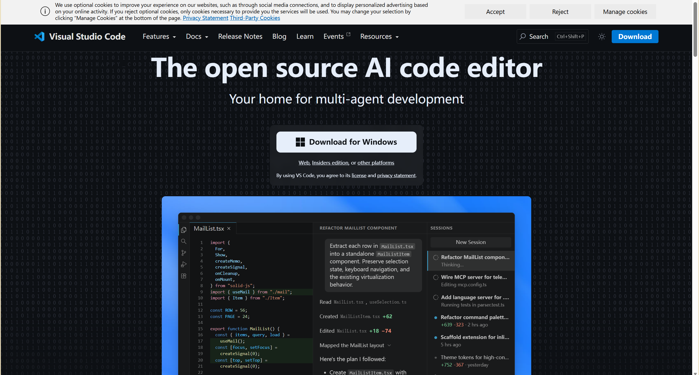
步骤二：熟悉主界面布局
启动 VS Code 后，识别五个核心区域：
| 区域 | 位置 | 功能 |
|---|---|---|
| 活动栏 | 最左侧窄条 | 资源管理器、搜索、源代码管理、扩展入口 |
| 侧边栏 | 活动栏右侧 | 当前活动栏工具的具体内容 |
| 编辑器区域 | 中央 | 主要文件编辑区 |
| 面板 | 底部 | 终端、输出、问题等 |
| 状态栏 | 最底部 | 文件信息、Git分支、编码格式 |
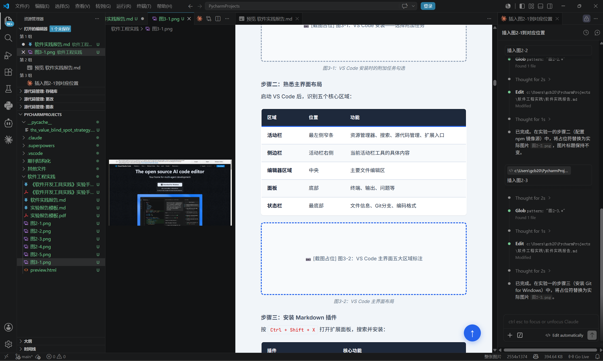
步骤三：安装 Markdown 插件
按 Ctrl + Shift + X 打开扩展面板，搜索并安装：
| 插件 | 核心功能 |
|---|---|
| Markdown All in One | 目录生成（[TOC]）、快捷键、列表自动延续、自动完成 |
| Markdown Preview Enhanced | 数学公式（LaTeX）、流程图（Mermaid）、导出为 PDF/HTML |
| Paste Image | Ctrl+Alt+V 直接粘贴剪贴板图片到文档 |
| markdownlint | 检查 Markdown 语法错误和格式规范（可选） |
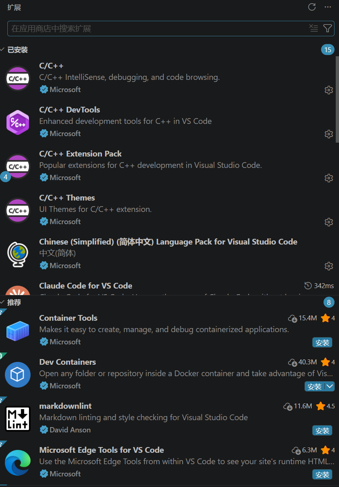
步骤四：编辑器优化配置
按 Ctrl + , 打开设置，做以下调整：
| 设置项 | 推荐值 | 作用 |
|---|---|---|
files.autoSave |
afterDelay |
自动保存，防止内容丢失 |
editor.wordWrap |
on |
自动换行，长文本阅读更舒适 |
Paste Image: Path Type |
relative |
图片路径使用相对路径 |
步骤五：编写并预览第一个 Markdown 文档
使用 Ctrl + N 新建文件，保存为 test.md，输入包含标题、列表、代码块等元素的 Markdown 内容。按 Ctrl + K V 打开并排预览窗口，实时查看渲染效果。
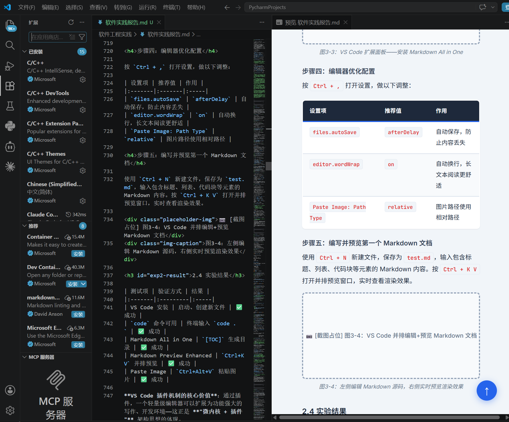
2.4 实验结果
| 测试项 | 验证方式 | 结果 |
|---|---|---|
| VS Code 安装 | 启动、创建新文件 | ✅ 成功 |
code 命令可用 |
终端输入 code . |
✅ 成功 |
| Markdown All in One | [TOC] 生成目录 |
✅ 成功 |
| Markdown Preview Enhanced | Ctrl+K V 并排预览 |
✅ 成功 |
| Paste Image | Ctrl+Alt+V 粘贴图片 |
✅ 成功 |
VS Code 插件机制的核心价值：通过插件，一个轻量级编辑器可以扩展为功能强大的写作、开发环境——这正是 "微内核 + 插件" 架构思想的体现。
2.5 知识总结
1. 代码编辑器 vs IDE：
| 对比维度 | 代码编辑器（VS Code） | IDE（PyCharm/IntelliJ） |
|---|---|---|
| 启动速度 | 快 | 较慢 |
| 核心功能 | 以编辑为核心，通过插件扩展 | 集成编译/调试/构建等全套工具链 |
| 资源占用 | 较低 | 较高 |
| 灵活性 | 按需安装插件，轻量可定制 | 功能全面但较为固定 |
| 典型场景 | 轻量开发、文档写作、脚本编辑 | 大型项目的全生命周期开发 |
2. Markdown 核心语法速查：
| 元素 | 语法 | 效果 |
|---|---|---|
| 标题 | # H1 ## H2 ### H3 |
1-6级标题 |
| 加粗 | **粗体** |
粗体 |
| 斜体 | *斜体* |
斜体 |
| 链接 | [文字](URL) |
超链接 |
| 图片 |  |
插入图片 |
| 代码行 | `code` |
code |
| 代码块 | ```lang ... ``` |
语法高亮代码块 |
| 表格 | | A | B | |
表格 |
| 引用 | > 引用 |
引用块 |
2.6 出现问题
请记录实验中实际遇到的问题和解决方法。 - 安装 VS Code 后命令行无法使用
code命令？ - 插件搜索不到或安装失败？ - Markdown 预览中图片无法显示？
常见问题参考：
| 问题现象 | 可能原因 | 解决方法 |
|---|---|---|
code 命令不可用 |
未添加到 PATH | 重新运行安装程序勾选；或手动添加系统环境变量 |
| 预览中图片无法显示 | 图片路径错误 | 使用相对路径，确认图片文件确实存在 |
[TOC] 不生成目录 |
未安装 Markdown All in One | 安装并启用该插件 |
| 预览窗口显示异常 | 插件未启用 | 检查扩展面板中插件状态 |
2.7 心得体会
安装VS Code前，我一直以为"编辑器不就是输入代码的地方"，打开主界面、看到那一排简洁的活动栏时，我才意识到自己过去对工具的理解有多浅薄。这节实验让我真正开始把VS Code当作一个完整的工作台来认识，而不再只是"打字用的窗口"。
实验中印象最深的是一处对比：VS Code作为一款免费开源编辑器，凭借强大的插件生态成为全球开发者最常用的工具，而国内某些编辑器仍采用高昂的付费模式，功能和用户量却远远不及。这让我联想到课程思政中常讲的"格局"二字——真正有价值的东西，往往不是靠封闭和收费来维系的，而是通过开放、共享、协作获得长久的生命力。微软将VS Code开源，看似"放弃"了商业利益，却赢得了整个开发者社区的信任和贡献，这种长期主义的视野值得我深思。
Markdown的写作体验也让我有所感悟：写文档时只需要用#表示标题、用*表示强调，完全不用纠结字号、颜色、行距这些排版问题。这种"关注点分离"的设计哲学——内容创作者专注于内容本身，样式和渲染交给工具处理——对我启发很大。学习生活中，我是否也经常把精力耗费在次要的事情上，反而忽略了真正重要的核心？把注意力聚焦在最有价值的部分，可能是效率提升的关键。
VS Code的插件生态则是另一种触动。我的实验环境里安装的Markdown插件都来自全球各地的开发者，他们素未谋面，却通过开源社区协作，共同打磨出一件件高质量的工具。这让我真切感受到"众人拾柴火焰高"的力量。未来我掌握了一定的开发能力后，也希望参与到这样的开源社区中，为技术生态贡献一份绵薄之力——这不只是技术能力的体现，更是对"责任"二字的践行。
🧪 实验三：Web站点构建
3.1 实验目的
本次实验旨在使用 Hexo 静态站点生成器（SSG） 构建一个完整的个人博客站点，并部署到 GitHub Pages 实现免费上线。通过完整体验 环境准备 → 项目初始化 → 内容编写 → 主题定制 → 本地预览 → 部署上线六个核心环节，理解静态站点生成器的工作原理及其与动态站点的本质区别。
3.2 实验环境
| 项目 | 配置信息 |
|---|---|
| 操作系统 | Windows 11 专业版 22H2 |
| 运行时 | Node.js v20.x LTS |
| 博客框架 | Hexo 7.x |
| 主题 | NexT（或其他） |
| 部署平台 | GitHub Pages |
| 部署工具 | hexo-deployer-git |
| 本地预览 | http://localhost:4000 |
3.3 实验过程
步骤一：创建并编写博客文章
使用 Hexo CLI 创建新文章，编辑 Front-matter 元数据和正文内容：
hexo new "我的第一篇博客"
编辑生成的 Markdown 文件：
---
title: 我的第一篇博客
date: 2026-07-05 10:00:00
tags:
- 入门
- Hexo
categories: 技术
---
## 欢迎来到我的博客
这是我的第一篇博客文章。通过 Hexo，我可以用 Markdown 轻松写作。
## 为什么要写技术博客？
- 记录学习和成长
- 分享知识和经验
- 打造个人技术品牌
生成静态页面并预览：
hexo generate # 或 hexo g
hexo server # 或 hexo s
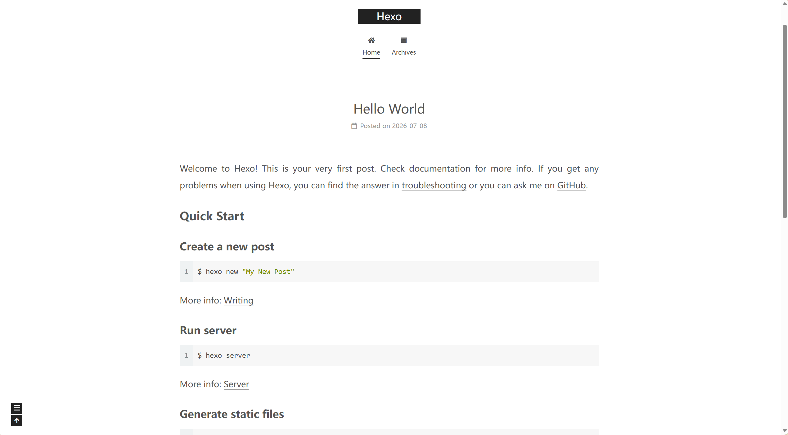
步骤二：更换主题
以 NexT 主题为例：
git clone https://github.com/theme-next/hexo-theme-next themes/next
修改 _config.yml 中的 theme 字段为 next，然后：
hexo clean && hexo generate && hexo server
步骤三：创建 GitHub 仓库
在 GitHub 上创建两个仓库：
| 仓库 | 名称 | 可见性 | 用途 |
|---|---|---|---|
| 源码仓库 | my-blog |
Private（推荐） | 存放 Hexo 源码 |
| 部署仓库 | [用户名].github.io |
Public | 托管静态页面 |
⚠️ 关键：部署仓库的名称必须是
你的GitHub用户名.github.io格式，否则 GitHub Pages 无法正确识别。
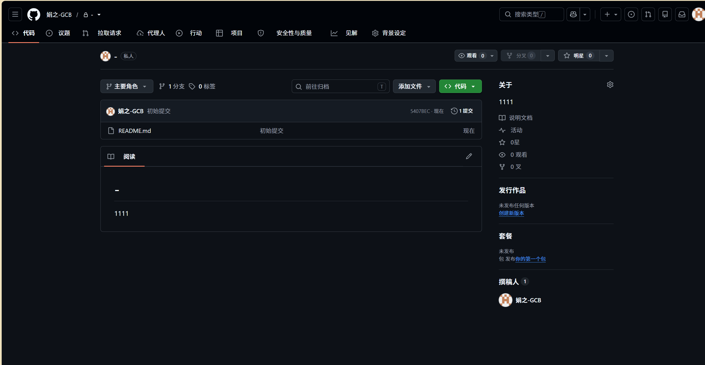
步骤四：配置并执行部署
安装部署插件：
npm install hexo-deployer-git --save
在 _config.yml 末尾添加部署配置：
deploy:
type: git
repo: https://github.com/你的用户名/你的用户名.github.io.git
branch: main
执行一键部署：
hexo clean && hexo generate && hexo deploy
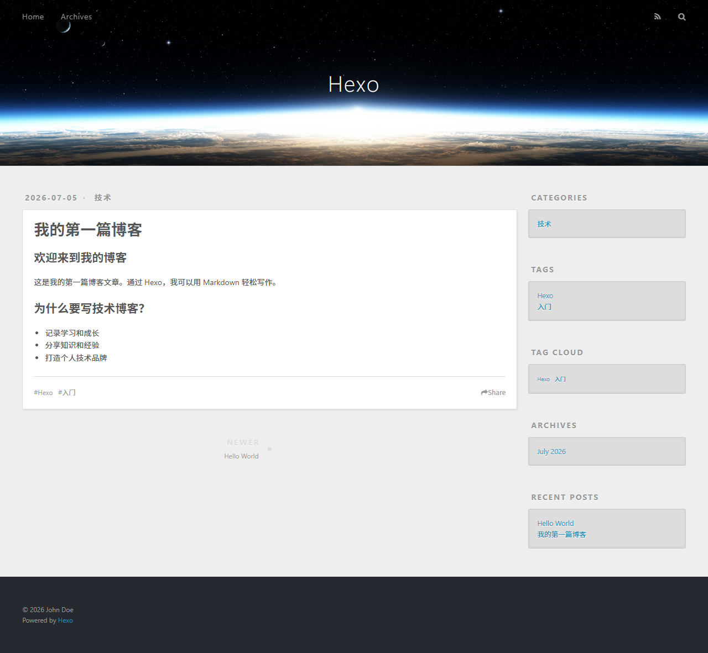
步骤五：访问上线博客
在浏览器中访问 https://你的用户名.github.io，确认博客成功上线。
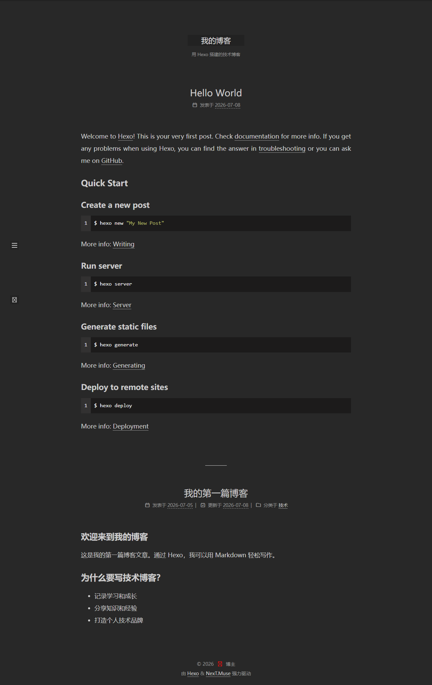
3.4 实验结果
| 测试项 | 验证方式 | 结果 |
|---|---|---|
| 文章创建 | hexo new "标题" |
✅ 成功 |
| 文章渲染 | http://localhost:4000 | ✅ 成功 |
| 主题更换 | NexT 主题生效 | ✅ 成功 |
| GitHub Pages 部署 | 访问 URL | ✅ 成功 |
| 线上访问 | https://[用户名].github.io |
✅ 成功 |
完整工作流：
写作 (Markdown) → hexo generate (生成HTML) → git push (推送源码)
↓
用户访问 ← GitHub Pages (托管) ← hexo deploy (部署)
3.5 知识总结
1. 静态站点生成器（SSG）的工作原理：
输入：Markdown 源文件 + 模板文件 + 配置文件 → 处理：SSG 引擎读取文章和模板，将 Markdown 渲染为 HTML，应用主题样式 → 输出：完整的静态 HTML/CSS/JS 文件集合（
public/目录）
核心理念是 "提前做好"（Build-time Rendering），而非动态站点的 "现场制作"（Runtime Rendering）。
2. Hexo 核心操作三件套：
| 命令 | 简写 | 作用 |
|---|---|---|
hexo clean |
— | 清理缓存和已生成文件 |
hexo generate |
hexo g |
将 Markdown 源文件编译为静态 HTML |
hexo deploy |
hexo d |
将静态文件部署到远程服务器 |
3. GitHub Pages 部署原理：
GitHub Pages 会读取指定分支（如
main或gh-pages）根目录下的index.html，并将其作为网站首页进行托管。Hexo 生成的静态文件被推送到该分支后，GitHub 自动配置 Web 服务器提供访问。
3.6 出现问题
记录实验中实际遇到的问题和解决方法。 - hexo deploy 提示认证失败怎么解决？ - 部署后页面样式丢失（CSS 404）怎么排查？ - 仓库命名不规范导致 404？
常见问题参考：
| 问题现象 | 可能原因 | 解决方法 |
|---|---|---|
| GitHub Pages 显示 404 | 仓库名称不是 用户名.github.io |
检查并修改仓库命名 |
| 部署后样式丢失 | _config.yml 中 url 配置错误 |
确保 url 设为 https://用户名.github.io |
| 部署认证失败 | 未配置 Git 凭证或 Token | 使用 Personal Access Token 代替密码 |
hexo deploy 报错 |
未安装 hexo-deployer-git |
执行 npm install hexo-deployer-git --save |
3.7 心得体会
从一行命令创建出第一篇文章，到最终通过 https://你的用户名.github.io 让全世界都能访问自己的博客，这个从零到一的过程让我真切体会到了“建造”的乐趣与开源生态的力量。最大的收获不仅仅是掌握了一套 Hexo 工作流，而是理解了“提前做好”的静态生成思想，以及现代工具如何把复杂的技术细节封装成简单命令，让普通人也能拥有独立、可控的个人网站。
GitHub Pages 提供的免费静态托管服务，本身就是互联网开放、协作、共享精神的一个缩影。它不设付费门槛，不限流量，只要你会写 Markdown，就给你一个面向全球的稳定入口。这让我联想到国内类似的 Gitee Pages、Coding Pages 等服务，它们同样在努力降低发布门槛，只是在使用体验上略有不同：GitHub Pages 国际化程度高、生态更完善，而国内平台更接地气、访问速度更快，但部分服务会要求实名认证或存在审查限制。无论哪种，这些平台共同指向一个事实——基础设施正在变成像水电一样的公共资源，个人表达的成本被空前压低。
使用 Hexo + GitHub Pages 搭建博客，全程不需要购买服务器、不用备案、不必花钱，凭借完全开源的工具链就拥有了一个响应快速、外观精美且完全属于自己的网站。这充分体现了技术的民主化：创作的门槛不再由资本或机构把持，而是被开源社区共同“削平”了。一个学生、一个独立创作者，只要会打字，就能通过 Git 和 Markdown 把思想发布到世界的任何角落。这种“零成本发声”的权利，在过往任何一个时代都是不可想象的。
>作为未来信息技术领域的从业者，这次实验也让我深刻意识到，我们享受的一切便利都建立在无数开源贡献者无私付出的基础之上。正是因为有人免费维护 NexT 主题、有人编写部署插件、有人将 Git 协议开放，我们才能站在巨人的肩膀上快速成长。这启示我，在学习技术的同时，更要珍视分享与回馈的精神，将来用自己的知识和行动去丰富这个生态，让更多后来者能够更低门槛地接触技术、表达自我，用技术传递正向价值。
🧪 实验四：虚拟机安装与使用
4.1 实验目的
本次实验旨在使用 Oracle VirtualBox 虚拟机软件安装 Ubuntu Server 22.04 LTS 操作系统，通过克隆技术快速构建一个包含多台虚拟机的虚拟化实验环境。理解和掌握基于虚拟机的开发环境构建方法，特别是双网卡（NAT + Host-Only） 网络方案的设计与配置。
4.2 实验环境
| 项目 | 配置信息 |
|---|---|
| 宿主机操作系统 | Windows 11 专业版 22H2 |
| 虚拟化软件 | Oracle VirtualBox 7.0 |
| 虚拟机操作系统 | Ubuntu Server 22.04 LTS (64-bit) |
| 虚拟机配置 | 内存 2GB，硬盘 20GB（动态分配 VDI） |
| 网络方案 | 双网卡：NAT（上网）+ Host-Only（内网互联） |
| 虚拟机节点 | template（模板机）、node1(192.168.56.101)、node2(192.168.56.102)、node3(192.168.56.103) |
4.3 实验过程
步骤一：下载与安装 VirtualBox
访问 VirtualBox 官网 https://www.virtualbox.org/ 下载 Windows 版安装包，按向导完成安装，安装后建议重启电脑以确保虚拟网卡驱动正确加载。
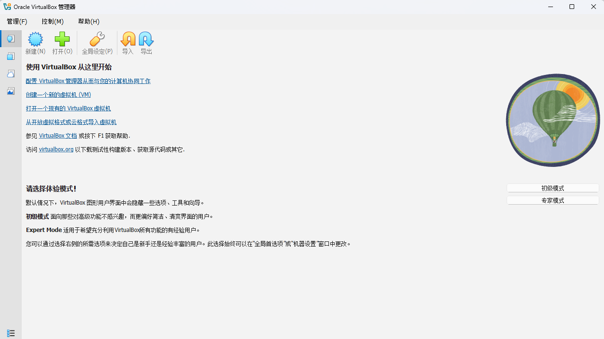
步骤二：下载 Ubuntu Server ISO
访问 Ubuntu 官网 https://ubuntu.com/download/server，下载 22.04 LTS 版本的 ISO 镜像文件（约 2GB）。
步骤三：创建模板虚拟机
新建虚拟机并配置：
| 配置项 | 值 |
|---|---|
| 名称 | ubuntu-template |
| 类型 | Linux / Ubuntu (64-bit) |
| 内存 | 2048 MB |
| 硬盘 | VDI 格式，动态分配，20 GB |
关键配置——双网卡网络方案：
| 适配器 | 连接方式 | IP分配 | 用途 |
|---|---|---|---|
| 适配器1（enp0s3） | NAT | DHCP 自动 | 访问互联网、下载软件 |
| 适配器2（enp0s8） | Host-Only | 静态IP | 多虚拟机之间内网互联 |
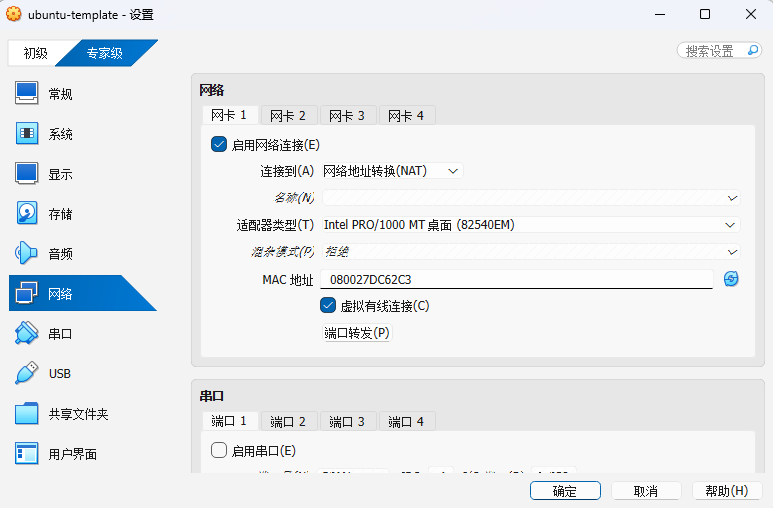
.png)
步骤四：安装 Ubuntu Server
启动虚拟机，选择 ISO 镜像，按向导完成系统安装。关键步骤：在软件选择页面务必按空格键选中 "Install OpenSSH server"，以便后续远程登录管理。
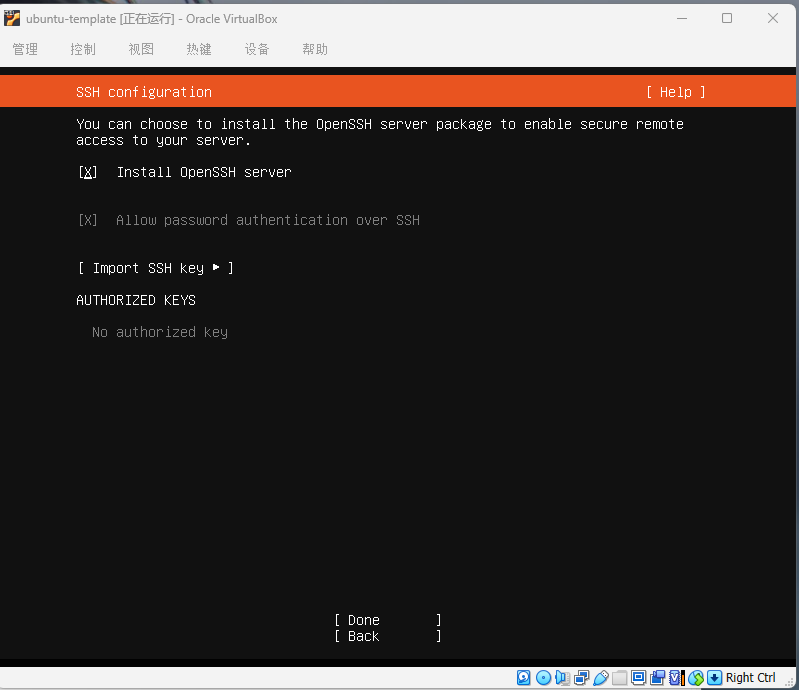
步骤五：配置静态IP（Netplan）
登录模板机后，编辑 Netplan 配置文件：
sudo nano /etc/netplan/50-cloud-init.yaml
修改内容为：
network:
version: 2
renderer: networkd
ethernets:
enp0s3: # NAT 网卡——DHCP 自动获取
dhcp4: yes
enp0s8: # Host-Only 网卡——静态IP
dhcp4: no
addresses:
- 192.168.56.101/24
nameservers:
addresses: [8.8.8.8, 114.114.114.114]
应用并验证：
sudo netplan apply
ip addr show # 确认IP已生效
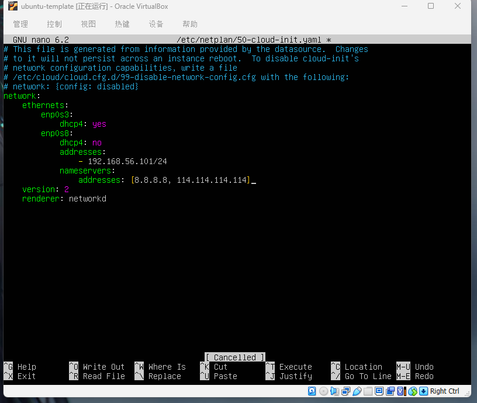
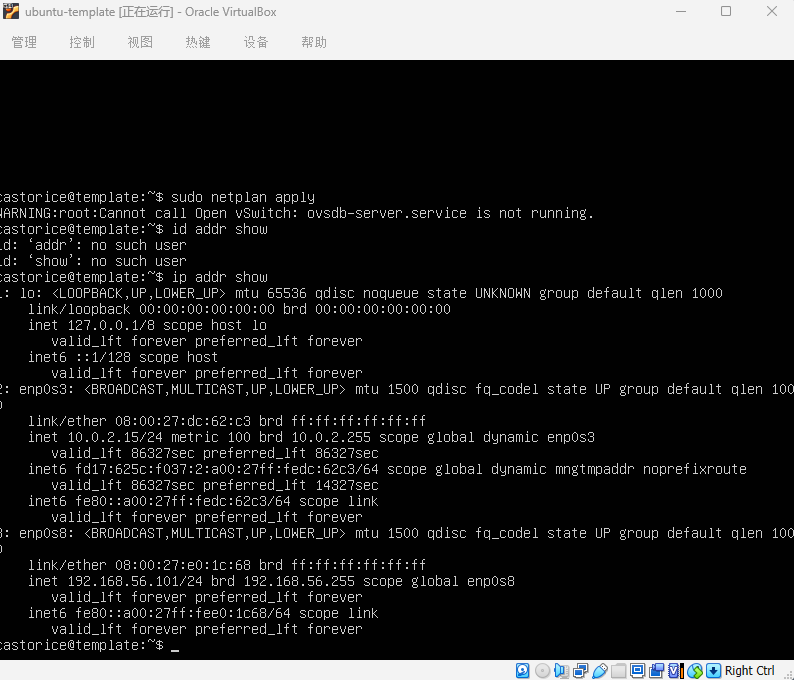
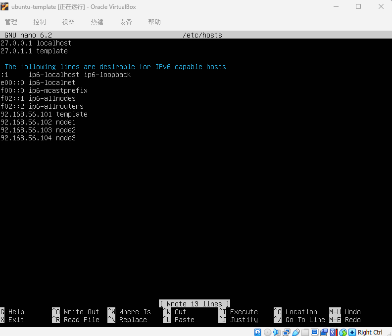
步骤六：配置主机名与 hosts 解析
sudo hostnamectl set-hostname template
sudo nano /etc/hosts
# 在文件末尾添加：
192.168.56.101 template
192.168.56.102 node1
192.168.56.103 node2
192.168.56.104 node3
步骤七：克隆虚拟机
关闭模板机后，在 VirtualBox 中右键点击模板机 → "克隆" → 选择 "完全克隆"，分别克隆出 node1、node2、node3。
⚠️ 重要：必须选择"完全克隆"而非"链接克隆"，以确保每台虚拟机独立运行且可分别修改网络配置。
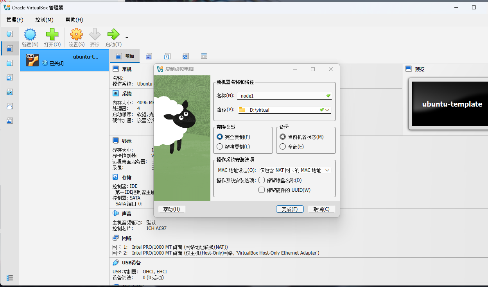
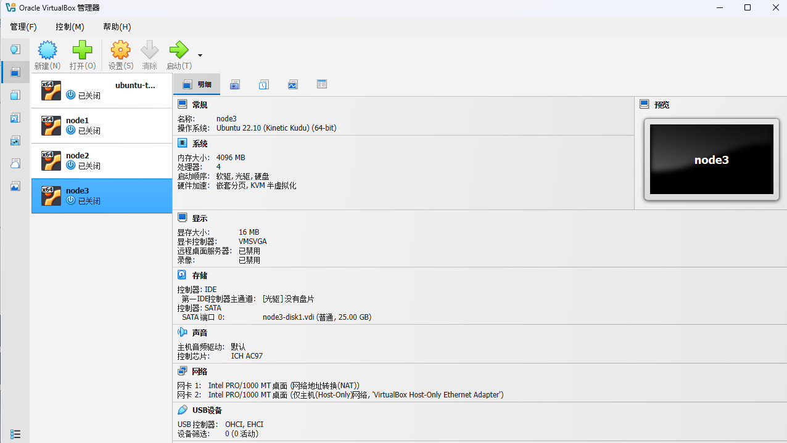
步骤八：修改克隆机的主机名和IP
对每台克隆机分别执行：
sudo hostnamectl set-hostname node1 # 依次改为 node1/node2/node3
sudo nano /etc/netplan/50-cloud-init.yaml # 修改IP为 192.168.56.102/103/104
sudo netplan apply
步骤九：验证多机环境
在 node1 上执行连通性测试：
ping -c 3 8.8.8.8 # 测试外网连接
ping -c 3 192.168.55.1 # 测试宿主机连接
ping -c 3 node2 # 测试虚拟机之间连接
ping -c 3 node3
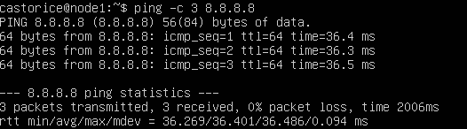
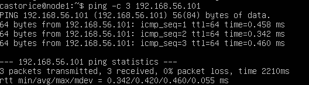
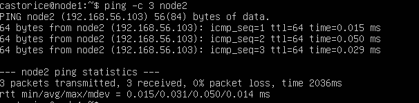
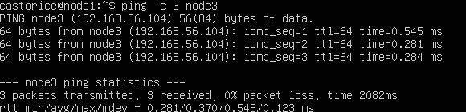
4.4 实验结果
| 测试项 | 源 | 目标 | 结果 |
|---|---|---|---|
| 外网连接 | node1 | 8.8.8.8 (Google DNS) | ✅ 成功 |
| 宿主机连接 | node1 | 192.168.55.1 | ✅ 成功 |
| 虚拟机互联 | node1 | node2 (192.168.56.102) | ✅ 成功 |
| 虚拟机互联 | node1 | node3 (192.168.56.103) | ✅ 成功 |
| 模板机IP | template | 192.168.56.101 | ✅ 已配置 |
最终环境架构：
┌─────────────────────────────────────────────────┐
│ 宿主机 Windows │
│ VirtualBox 管理器 │
│ ┌──────────┐ ┌──────────┐ ┌──────────┐ │
│ │ node1 │ │ node2 │ │ node3 │ │
│ │ .56.101 │ │ .56.102 │ │ .56.103 │ │
│ │ Ubuntu │ │ Ubuntu │ │ Ubuntu │ │
│ │ Server │ │ Server │ │ Server │ │
│ └────┬─────┘ └────┬─────┘ └────┬─────┘ │
│ │ │ │ │
│ └─────────────┼─────────────┘ │
│ │ │
│ Host-Only 网络 (192.168.56.0/24) │
│ │ │
│ 宿主机 (192.168.56.1) │
└─────────────────────────────────────────────────┘
4.5 知识总结
1. 三种虚拟机网络模式对比：
| 网络模式 | 虚拟机↔宿主机 | 虚拟机↔外网 | 外网↔虚拟机 | 虚拟机之间 | 典型用途 |
|---|---|---|---|---|---|
| NAT | ✅（单向） | ✅ | ❌ | ❌ | 日常上网、安装软件 |
| 桥接 | ✅ | ✅ | ✅ | ✅ | 需要被局域网其他设备访问 |
| Host-Only | ✅ | ❌ | ❌ | ✅ | 搭建隔离的实验私网 |
2. 双网卡方案的优势：
NAT 网卡保障了虚拟机可以访问互联网（下载软件、更新系统），Host-Only 网卡构建了宿主机与虚拟机之间稳定且隔离的内网环境。两者互补，既不影响上网功能，又保证了多机互联的可靠性。
3. 克隆技术的价值：
通过"模板机 + 完全克隆"的方式，可以将环境搭建时间从 O(n) 降为 O(1)——配置好一台模板机后，克隆几乎零成本复制整个环境，这是云计算和虚拟化技术的核心思想。
4.6 出现问题
记录实验中实际遇到的问题和解决方法。 - BIOS 是否开启了 VT-x/AMD-V 虚拟化？ - 双网卡配置后哪个网卡对应 enp0s3/enp0s8？ - 克隆后虚拟机网络不通？
常见问题参考：
| 问题现象 | 可能原因 | 解决方法 |
|---|---|---|
| 提示 "VT-x/AMD-V 未启用" | BIOS 中未开启硬件虚拟化 | 重启进入 BIOS 启用 Intel VT-x 或 AMD-V |
| 虚拟机之间 ping 不通 | IP 不在同一 Host-Only 网段 | 检查所有虚拟机 IP 均在 192.168.56.0/24 |
| 克隆后网络无法使用 | 保留了原网卡 MAC 地址导致冲突 | 在 VirtualBox 中为每台克隆机重新生成 MAC 地址 |
| 虚拟机无法上网 | NAT 网卡配置错误 | 确认 enp0s3 配置为 dhcp4: yes |
4.7 心得体会
亲手用 VirtualBox 搭建出一个由四台 Ubuntu Server 组成的互通环境，让我第一次直观感受到虚拟化技术“一台物理机承载多套独立系统”的强大。这正是现代云计算的基础——阿里云的“神龙架构”、腾讯云的“星星海”服务器，都是通过虚拟化将庞大物理资源切分为弹性算力，服务千行百业。VirtualBox 作为开源产品，极大降低了个人学习门槛，而国内云厂商在开源基础上深耕自研虚拟化，实现了性能与安全的双重突破，这提醒我们：吸收开源智慧，更要走向自主可控。
实验四为后续所有实验奠定了根基——有了这个“迷你数据中心”，接下来才能做 SSH 互信、分布式配置、容器部署等。这种“先构建稳定基础设施，再层层迭代上层应用”的方法，正是工程中“基础设施即代码”与“可复现环境”思想的体现。模板机加完全克隆的做法，让我体会到“一次性配好、多次复制”的标准化力量，避免了重复劳动，也降低了人为误操作。
由此我认识到，无论是做实验还是将来做系统架构，磨刀不误砍柴工。先花力气构建一个扎实、互通、可复现的底层环境，后续的开发、测试、部署才会行云流水。作为信息类专业学生，我应当在每一次动手实践中培养这种系统观和工程素养，为将来投身数字中国建设打下坚实基础。
🧪 实验五：Linux环境配置
5.1 实验目的
本次实验旨在掌握 Linux 系统的基础命令行操作，理解并管理常用的系统配置文件（/etc/passwd、/etc/group、/etc/profile 等）和用户配置文件（~/.bashrc、~/.profile 等），掌握环境变量的查看、临时设置与永久设置方法，为后续的服务器管理和软件部署打下基础。
5.2 实验环境
| 项目 | 配置信息 |
|---|---|
| 操作系统 | Ubuntu Server 22.04 LTS（VirtualBox 虚拟机） |
| 前置条件 | 已完成实验四，至少有一台运行中的 Ubuntu 虚拟机 |
| 当前用户 | dev（sudo 权限） |
| 网络 | Host-Only 网络（192.168.56.0/24） |
5.3 实验过程（图文并茂）
第一部分：系统基础操作
步骤一：登录与系统信息查看
whoami # 查看当前用户
uname -a # 查看内核版本与架构
lsb_release -a # 查看 Ubuntu 发行版信息
hostname # 查看主机名
pwd # 查看当前工作目录
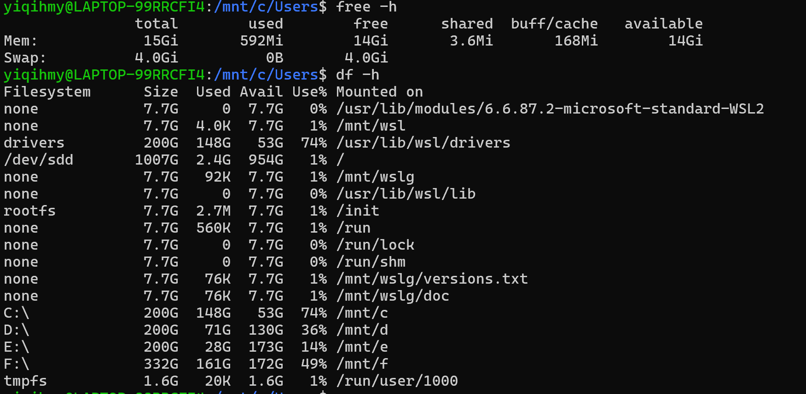
步骤二：文件与目录操作
ls -lh # 详细列表（人类可读的文件大小）
cd ~ # 切换到主目录
mkdir test_dir # 创建目录
touch test.txt # 创建空文件
cp test.txt test_copy.txt # 复制文件
mv test.txt /tmp/ # 移动文件
rm -f test.txt # 强制删除文件
⚠️ 警告：
rm -rf命令会永久删除文件且不可恢复，使用时须格外小心！
步骤三：系统资源监控
free -h # 查看内存使用
df -h # 查看磁盘使用
top # 实时查看进程和资源（按 q 退出）
du -sh * # 查看当前目录各子目录大小
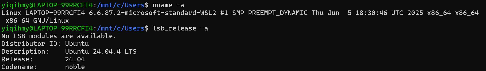
第二部分：用户与权限管理
步骤四：查看用户与组配置文件
cat /etc/passwd # 查看所有用户账户信息
sudo cat /etc/shadow # 查看加密密码信息（仅root可读）
cat /etc/group # 查看所有用户组
id # 查看当前用户的 UID 和 GID
/etc/passwd 文件格式：用户名:密码占位符:UID:GID:用户描述:主目录:登录Shell
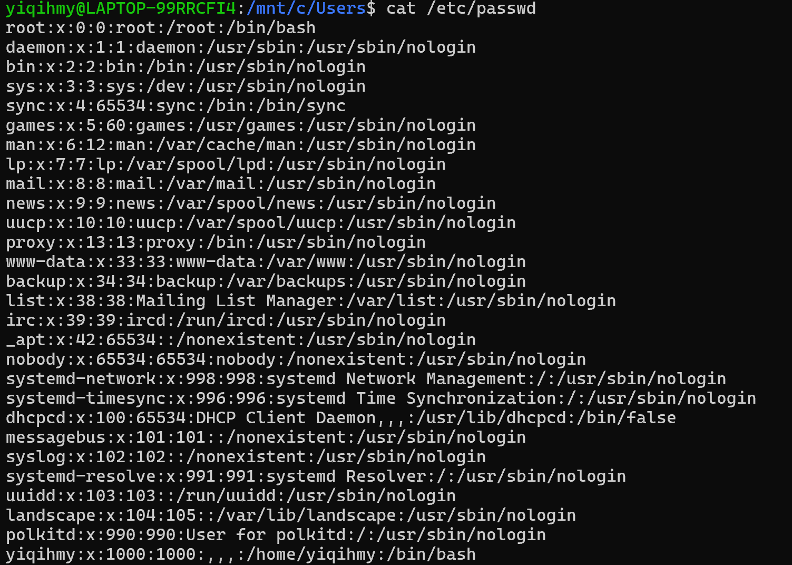
步骤五：用户管理操作
sudo adduser testuser # 创建新用户
sudo passwd testuser # 设置/修改用户密码
sudo usermod -aG sudo testuser # 将用户加入 sudo 组（赋予管理员权限）
groups testuser # 查看用户所属的组
su - testuser # 切换到 testuser 身份
sudo deluser --remove-home testuser # 删除用户及其主目录
步骤六：文件权限管理
权限数字对照表：
| 数字 | 权限 | 含义 | 二进制 |
|---|---|---|---|
| 7 | rwx |
读 + 写 + 执行 | 111 |
| 6 | rw- |
读 + 写 | 110 |
| 5 | r-x |
读 + 执行 | 101 |
| 4 | r-- |
只读 | 100 |
| 0 | --- |
无权限 | 000 |
chmod 755 script.sh # rwxr-xr-x：所有者全权限，其他只读+执行
chmod u+x script.sh # 为所有者增加执行权限
chmod g-w file.txt # 去掉组的写权限
chown user:group file.txt # 修改文件所有者和组
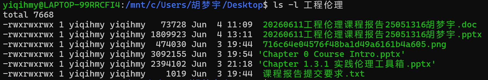
第三部分：环境变量与配置文件
步骤七：查看环境变量
env # 查看所有环境变量
echo $PATH # 查看可执行文件搜索路径
echo $HOME # 查看当前用户主目录
echo $USER # 查看当前用户名
echo $SHELL # 查看当前使用的 Shell
步骤八：临时设置环境变量
export PATH=$PATH:/home/dev/mybin # 临时追加 PATH
export MY_VAR="Hello World" # 创建临时变量
echo $MY_VAR # 验证变量存在
unset MY_VAR # 删除变量
⚠️ 临时变量在终端关闭后即消失，如需永久保存需写入配置文件。
步骤九：永久设置环境变量——用户级
三种用户级配置文件的区别：
| 配置文件 | 加载时机 | 典型用途 |
|---|---|---|
~/.bashrc |
每次打开新终端 | 别名(alias)、PATH 追加、自定义函数 |
~/.profile |
用户登录时（仅一次） | 登录时需要执行的环境设置 |
~/.bash_profile |
用户登录时（优先于 .profile） | 登录时需要执行的环境设置 |
编辑 ~/.bashrc 添加自定义环境变量和别名：
nano ~/.bashrc
# 在文件末尾添加：
export PATH=$PATH:/home/dev/mybin
export MY_CUSTOM_VAR="自定义变量值"
alias ll='ls -alF'
alias gs='git status'
source ~/.bashrc # 使配置立即生效
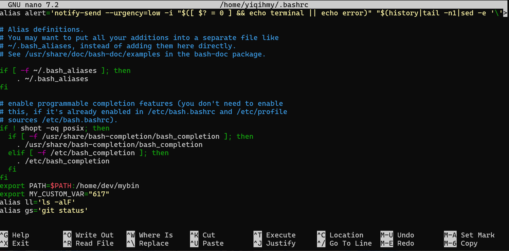
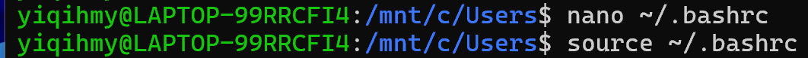
步骤十：永久设置环境变量——系统级
三种系统级配置方式的对比：
| 方法 | 配置文件 | 生效范围 | 生效方式 |
|---|---|---|---|
| 方法一 | /etc/environment |
所有用户 | 需重启系统 |
| 方法二 | /etc/profile |
所有登录用户 | source /etc/profile |
| 方法三（推荐） | /etc/profile.d/*.sh |
所有用户 | 模块化、易于管理 |
推荐的方法三：
sudo nano /etc/profile.d/myenv.sh
# 添加内容：
export JAVA_HOME=/usr/lib/jvm/java-11-openjdk-amd64
export PATH=$PATH:$JAVA_HOME/bin
source /etc/profile.d/myenv.sh # 立即生效
5.4 实验结果
| 测试项 | 验证命令 | 结果 |
|---|---|---|
| 文件操作 | ls -lh, mkdir, touch, cp, mv, rm |
✅ 掌握 |
| 系统监控 | free -h, df -h, top |
✅ 掌握 |
| 用户管理 | adduser, usermod, deluser |
✅ 掌握 |
| 文件权限 | chmod 755 file |
✅ 掌握 |
| 用户级环境变量 | ~/.bashrc 配置 PATH 和别名 |
✅ 成功 |
| 系统级环境变量 | /etc/profile.d/myenv.sh |
✅ 成功 |
5.5 知识总结
1. Linux 文件权限模型（UGO）：
- rw- r-- r--
│ │ │ │
│ │ │ └── Others（其他用户） 读权限
│ │ └─────── Group（所属组） 读权限
│ └──────────── Owner（所有者） 读写权限
└─────────────── 文件类型（- 普通文件，d 目录）
2. 环境变量配置最佳实践：
- 个人开发工具 →
~/.bashrc- 项目级环境变量 →
.env文件- 系统级全局变量 →
/etc/profile.d/*.sh- 避免直接修改
/etc/environment（需要重启，不易版本管理）
3. 核心命令速查：
| 类别 | 常用命令 |
|---|---|
| 目录导航 | pwd, cd, ls |
| 文件操作 | touch, mkdir, cp, mv, rm, cat, nano |
| 权限管理 | chmod, chown, chgrp |
| 系统监控 | free, df, top, du, ps |
| 用户管理 | whoami, id, adduser, usermod, passwd, su |
| 环境变量 | env, echo, export, source, unset |
5.6 出现问题
[待补充] 请记录实验中实际遇到的问题和解决方法。 - 有没有遇到
Permission denied的情况？ - 修改~/.bashrc后不生效？ -sudo: command not found如何解决？
常见问题参考：
| 问题现象 | 可能原因 | 解决方法 |
|---|---|---|
Permission denied |
权限不足 | 使用 sudo 提权 |
~/.bashrc 修改不生效 |
未执行 source 或重新登录 |
执行 source ~/.bashrc |
sudo: command not found |
用户不在 sudo 组 | 切换到可 sudo 的用户或用 root 添加 |
修改 /etc/environment 不生效 |
需要重启 | 重启系统或注销重新登录 |
5.7 心得体会
通过本次 Linux 基础命令实操实验，我学习了用户账号查看、环境变量配置、文件权限设置等基础操作，慢慢熟悉了命令行的使用方式，也有了不少真切的学习感悟。 从前平时一直习惯用图形化界面操作电脑，点点鼠标就能完成操作，接触 Linux 后才慢慢理解 “一切皆文件” 的设计思想。原来系统里的用户信息、用户组、登录配置这些内容，全都存放在对应的文本文件里，像/etc/passwd这类文件，直接就能查看系统用户相关数据。抛开直观的桌面操作，用文本指令去操作系统，虽然刚开始觉得繁琐难懂，但也让我看清了系统最基础的运行逻辑，明白很多便捷操作背后都有简洁底层逻辑作为支撑。 在学习过程中，我也了解到 Linux 凭借开源特性，广泛应用在服务器、云计算等众多领域，是互联网发展的重要基础。同时知晓了国内如今大力发展统信 UOS、华为欧拉等国产操作系统，努力突破底层软件技术难关。操作系统是信息产业的根基，关乎信息技术自主发展，作为学生，我深知基础软件领域还有很长的路要走，今后我会认真学好专业基础知识，主动关注国产系统的发展，树立自主创新的学习理念。 本次实验里的文件权限管理内容，也让我深有体会。chmod修改权限、区分不同用户权限等级这些简单操作，看似普通，却直接关系到系统安全。随意开放过高权限，很容易带来数据泄露、系统出错等安全隐患。这也让我明白，学习计算机技术不能只追求操作简便，更要树立安全意识，在日常练习操作中保持严谨认真的态度，规范使用各类命令，养成细心稳妥的操作习惯，懂得技术使用也要坚守安全底线，肩负起对应的技术责任。 这次实验让我打下了 Linux 学习的基础，也发现自己还有很多知识没有掌握，命令使用依旧不够熟练。往后我会多加练习实操，循序渐进掌握相关技能，踏实学好专业知识，端正学习态度，在学好技术的同时，提升自身综合素养。
🧪 实验六：远程登录管理
6.1 实验目的
本次实验旨在安装和配置 OpenSSH 服务，实现多台 Linux 虚拟机之间的安全远程登录管理。掌握 SSH 密钥认证（免密登录）的配置方法，理解公钥/私钥对的身份验证原理。同时掌握使用 SCP 和 rsync 进行跨机文件传输与同步的技能，为多机开发环境的协同管理打下基础。
6.2 实验环境
| 项目 | 配置信息 |
|---|---|
| 操作系统 | Ubuntu Server 22.04 LTS × 多台 |
| 网络 | Host-Only（192.168.56.0/24） |
| SSH 认证 | Ed25519 密钥对 + 密码认证 |
| 节点 | node1 (192.168.56.101)、node2 (192.168.56.102) |
6.3 实验过程（图文并茂）
第一部分：SSH 服务安装与基础配置
步骤一：检查并安装 SSH 服务
sudo systemctl status ssh # 检查 SSH 服务状态
sudo apt install openssh-server -y # 安装 OpenSSH 服务端
sudo systemctl enable ssh # 设置开机自启
sudo systemctl start ssh # 启动服务
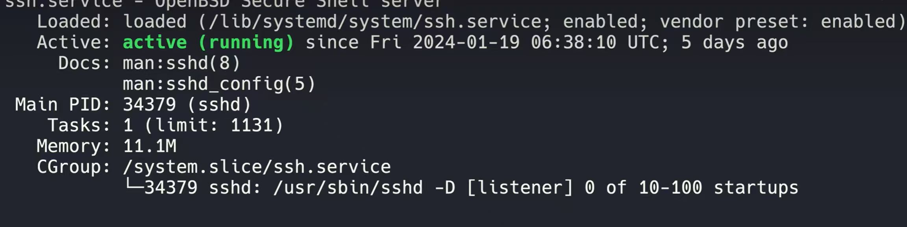
步骤二：配置 SSH 服务器安全选项
sudo nano /etc/ssh/sshd_config
关键安全配置：
# Port 22 # 默认端口（生产环境建议改为非标准端口）
PermitRootLogin no # 禁止 root 直接登录
PubkeyAuthentication yes # 允许公钥认证
PasswordAuthentication yes # 允许密码认证（密钥配置后可关闭）
sudo systemctl restart ssh # 重启服务使配置生效
第二部分：SSH 密钥认证（免密登录）
步骤三：生成 SSH 密钥对（在 node1 上）
ssh-keygen -t ed25519 -C "你的邮箱@example.com"
# 一路回车使用默认路径和空密码
生成后会在 ~/.ssh/ 目录下产生两个文件：
| 文件 | 说明 | 安全要求 |
|---|---|---|
id_ed25519 |
私钥（Private Key） | 绝不能泄露！权限 600 |
id_ed25519.pub |
公钥（Public Key） | 可以分发给任何服务器 |
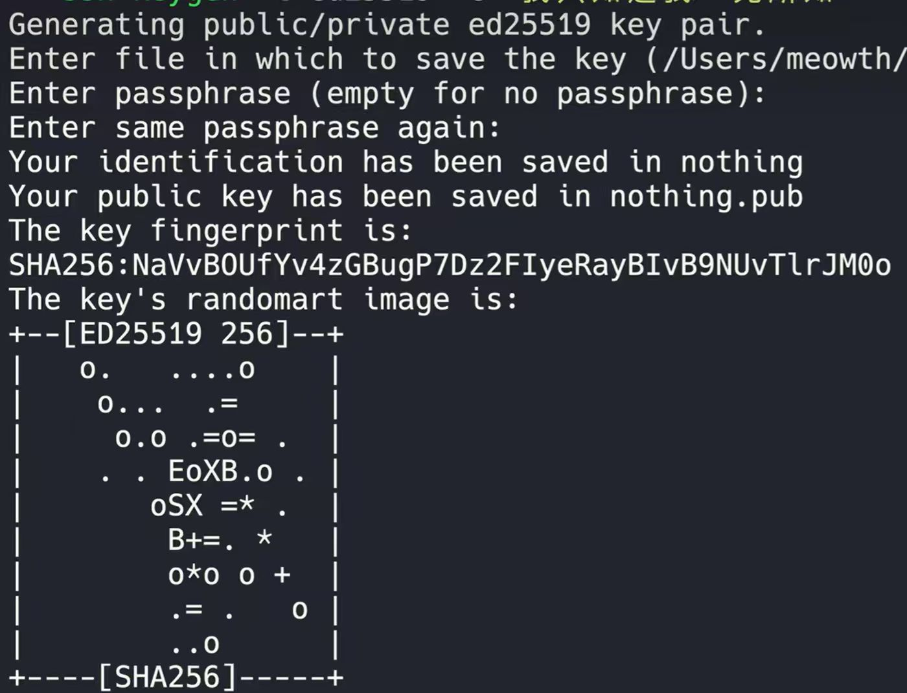
步骤四：将公钥复制到远程服务器
# 推荐方法：使用 ssh-copy-id 自动完成
ssh-copy-id dev@192.168.56.102
# 输入 node2 上 dev 用户的密码（最后一次输入密码）
命令自动完成以下操作：
1. 将公钥追加到远程服务器的 ~/.ssh/authorized_keys
2. 自动设置正确的文件权限
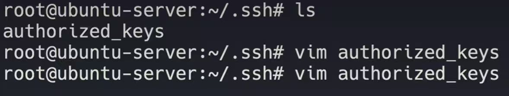
步骤五：验证免密登录
ssh dev@192.168.56.102
# 应该直接登录成功，不再需要输入密码！
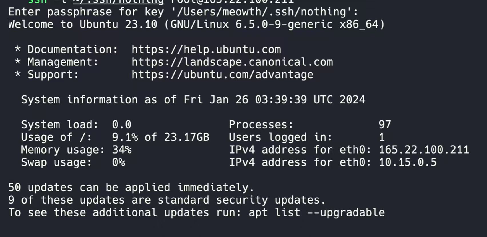
第三部分：跨机文件传输
步骤六：使用 SCP 传输文件
# 上传文件到远程
scp /home/dev/test.txt dev@192.168.56.102:/home/dev/
# 上传整个目录（递归）
scp -r /home/dev/project/ dev@192.168.56.102:/home/dev/
# 从远程下载文件
scp dev@192.168.56.102:/home/dev/log.txt ./
# 从远程下载目录
scp -r dev@192.168.56.102:/home/dev/backup/ ./
步骤七：使用 rsync 增量同步
# 安装 rsync
sudo apt install rsync -y
# 本地目录同步
rsync -avz /home/dev/source/ /home/dev/backup/
# 推送到远程（通过 SSH）
rsync -avz -e ssh /home/dev/project/ dev@192.168.56.102:/home/dev/project/
# 从远程拉取
rsync -avz -e ssh dev@192.168.56.102:/home/dev/logs/ ./logs/
# 保持完全一致（--delete 删除目标中多余文件）
rsync -avz --delete -e ssh /home/dev/source/ dev@192.168.56.102:/home/dev/dest/
# 排除特定文件
rsync -avz --exclude='*.log' --exclude='node_modules/' -e ssh /home/dev/ dev@192.168.56.102:/home/dev/
rsync 常用选项：
| 选项 | 含义 |
|---|---|
-a |
归档模式（保留权限、时间戳、符号链接等） |
-v |
显示详细信息（verbose） |
-z |
传输时压缩数据 |
--delete |
删除目标端多余文件（实现完全镜像） |
--exclude |
排除指定文件或目录 |
-e ssh |
通过 SSH 加密传输 |
6.4 实验结果
| 测试项 | 源 | 目标 | 结果 |
|---|---|---|---|
| SSH 密码登录 | node1 | node2 | ✅ 成功 |
| SSH 密钥免密登录 | node1 | node2 | ✅ 成功 |
| SCP 文件上传 | node1: test.txt | node2: /home/dev/ | ✅ 成功 |
| SCP 目录下载 | node2: /backup/ | node1: ./ | ✅ 成功 |
| rsync 增量同步 | node1: /project/ | node2: /project/ | ✅ 成功 |
6.5 知识总结
1. SSH 密钥认证原理（非对称加密）：
┌──────────────┐ ┌──────────────┐
│ node1 │ │ node2 │
│ │ ① ssh-keygen 生成密钥对 │ │
│ id_ed25519 │ ② ssh-copy-id 发送公钥 →→→ │ authorized_ │
│ (私钥) │ │ keys (公钥) │
│ id_ed25519 │ ③ SSH 登录时： │ │
│ .pub (公钥) │ node2 用公钥加密挑战码 →→→ │ │
│ │ node1 用私钥解密 ←←← │ │
│ │ 验证通过，登录成功 │ │
└──────────────┘ └──────────────┘
私钥永远不离开本地——这就是"免密"却"更安全"的本质。
2. SCP vs rsync 对比：
| 对比维度 | SCP | rsync |
|---|---|---|
| 传输方式 | 全量传输（每次都传完整文件） | 增量传输（只传变化部分） |
| 适用场景 | 一次性文件传输 | 目录同步、定期备份、部署 |
| 断点续传 | ❌ 不支持 | ✅ 支持 |
| 文件过滤 | ❌ 不支持 | ✅ 支持 --exclude/--include |
| 删除同步 | ❌ 不支持 | ✅ 支持 --delete |
| 推荐场景 | 传几个小文件 | 大目录、频繁同步、自动化部署 |
3. 核心命令速查：
| 命令 | 作用 |
|---|---|
ssh user@host |
远程登录 |
ssh-keygen -t ed25519 |
生成密钥对 |
ssh-copy-id user@host |
将公钥复制到远程 |
scp file user@host:path |
上传文件 |
scp user@host:path ./ |
下载文件 |
rsync -avz src/ dst/ |
本地同步 |
rsync -avz -e ssh src/ user@host:dst/ |
远程同步 |
6.6 出现问题
[待补充] 请记录实验中实际遇到的问题和解决方法。 - SSH 连接被拒绝（Connection refused）？ - 配置免密后仍需输入密码？ - rsync 提示远程未找到命令？
常见问题参考：
| 问题现象 | 可能原因 | 解决方法 |
|---|---|---|
ssh: connect to host port 22: Connection refused |
SSH 服务未运行 | sudo systemctl start ssh |
| 配置密钥后仍需密码 | 文件权限不正确 | chmod 700 ~/.ssh; chmod 600 ~/.ssh/authorized_keys |
Permission denied (publickey) |
公钥未正确复制 | 重新执行 ssh-copy-id；检查 authorized_keys 内容 |
rsync: command not found (远程) |
远程服务器未安装 rsync | sudo apt install rsync -y（在远程执行） |
6.7 心得体会
[待补充] 请结合课程思政要求与个人实际经历撰写心得体会。
写作提示： - SSH 密钥认证让你告别了每次都要输密码的繁琐——"免密"背后是非对称加密的数学原理，这让你对密码学有什么新的认识？ - OpenSSH 是开源的，支撑着全球绝大多数服务器的安全管理。安全工具的开源对于国家安全和自主可控有什么意义？【课程大纲-思政融合点5】 - rsync 的增量同步算法只传输文件变化的部分——这种"只做必要的工作"的工程思维对你有什么启发？在实际开发中如何应用这种思想？
🧪 实验七：软件部署
7.1 实验目的
本次实验旨在综合运用前七个实验所学的各类工具，构建和模拟一个完整的网络开发与部署环境。完整体验 Web 静态站点从本地开发到云端自动部署的全流程，掌握 GitHub Actions 持续集成/持续部署（CI/CD） 的基本概念与实践方法，同时学习使用 Nginx 在 Linux 服务器上部署静态站点。
7.2 实验环境
| 项目 | 配置信息 |
|---|---|
| 本地开发 | Windows 11 + VS Code + Node.js + Hexo |
| 版本控制 | Git + GitHub（源码仓库 + 部署仓库） |
| CI/CD | GitHub Actions |
| 部署平台 | GitHub Pages + 虚拟机 Nginx 服务器 |
| 虚拟机 | Ubuntu Server 22.04 LTS（192.168.56.101） |
| Web 服务器 | Nginx |
7.3 实验过程（图文并茂）
第一部分：GitHub Actions 自动化部署（CI/CD）
步骤一：准备工作
确认本地 Hexo 博客和 Git 配置正常：
cd ~/my-blog
hexo server # 验证博客能正常运行
git config --global user.name
git config --global user.email
步骤二：创建两个 GitHub 仓库
| 仓库 | 名称 | 可见性 | 分支 | 用途 |
|---|---|---|---|---|
| 源码仓库 | my-blog |
Private（推荐） | main |
存放 Hexo 源码 |
| 部署仓库 | [用户名].github.io |
Public | main |
托管静态页面供访问 |
步骤三：将本地项目关联到源码仓库
cd ~/my-blog
git init
git remote add origin https://github.com/你的用户名/my-blog.git
创建 .gitignore 文件：
node_modules/
.DS_Store
public/
.deploy_git/
提交并推送：
git add .
git commit -m "初始化Hexo博客源码"
git branch -M main
git push -u origin main
步骤四：配置 GitHub Actions 工作流
这是本实验的核心步骤——编写自动化部署配置文件：
mkdir -p .github/workflows
nano .github/workflows/deploy.yml
编写工作流配置文件（⚠️ 请将"你的用户名"替换为实际 GitHub 用户名）：
name: Deploy to GitHub Pages
on:
push:
branches: [main] # 当 main 分支有推送时自动触发
workflow_dispatch: # 也支持手动触发
jobs:
deploy:
runs-on: ubuntu-latest
steps:
- name: 检出源码
uses: actions/checkout@v3
- name: 安装 Node.js
uses: actions/setup-node@v3
with:
node-version: '20'
- name: 缓存依赖
uses: actions/cache@v3
with:
path: ~/.npm
key: ${{ runner.os }}-node-${{ hashFiles('**/package-lock.json') }}
- name: 安装依赖
run: npm install
- name: 生成静态文件
run: npx hexo generate
- name: 创建 .nojekyll 文件
run: echo "" > public/.nojekyll
- name: 部署到 GitHub Pages
uses: peaceiris/actions-gh-pages@v3
with:
personal_token: ${{ secrets.PERSONAL_TOKEN }}
publish_dir: ./public
publish_branch: main
external_repository: 你的用户名/你的用户名.github.io
提交并推送工作流文件：
git add .github/workflows/deploy.yml
git commit -m "添加 GitHub Actions 自动部署工作流"
git push
步骤五：配置 Personal Access Token（密钥）
🔑 为了让 GitHub Actions 能够向你的部署仓库推送代码，需要配置一个有写入权限的 Token。
操作流程：
- GitHub → Settings → Developer settings → Personal access tokens → Tokens (classic)
- Generate new token (classic)
- 勾选
repo权限（完整仓库访问权限） - 生成后立即复制 Token（仅显示一次！）
- 回到源码仓库 → Settings → Secrets and variables → Actions → New repository secret
- Name：
PERSONAL_TOKEN - Secret：粘贴刚才复制的 Token
步骤六：配置 GitHub Pages 并验证
部署仓库 → Settings → Pages → Branch: main → Save。
访问 https://你的用户名.github.io 确认博客上线。
第二部分：部署到云服务器（虚拟机 Nginx）
步骤七：在虚拟机上安装和配置 Nginx
sudo apt update
sudo apt install nginx -y
sudo systemctl start nginx
sudo systemctl enable nginx # 开机自启
创建站点目录并配置 Nginx：
sudo mkdir -p /var/www/blog
sudo chown -R $USER:$USER /var/www/blog
sudo nano /etc/nginx/sites-available/blog
Nginx 站点配置：
server {
listen 80;
server_name _;
root /var/www/blog;
index index.html;
location / {
try_files $uri $uri/ =404;
}
}
启用站点：
sudo ln -s /etc/nginx/sites-available/blog /etc/nginx/sites-enabled/
sudo rm /etc/nginx/sites-enabled/default # 移除默认站点
sudo nginx -t # 测试配置语法
sudo systemctl reload nginx # 重载配置
步骤八：使用 rsync 部署到虚拟机
在本地生成静态文件后，通过 rsync 一键同步到虚拟机：
cd ~/my-blog
hexo generate
# 通过 rsync 同步到虚拟机 Nginx 站点目录
rsync -avz --delete -e ssh public/ dev@192.168.56.101:/var/www/blog/
访问虚拟机 IP（http://192.168.56.101）即可看到部署的博客。
7.4 实验结果
| 测试项 | 验证方式 | 结果 |
|---|---|---|
| GitHub Actions 自动构建 | 推送代码后自动触发 | ✅ 成功 |
| GitHub Pages 部署 | 访问 https://[用户名].github.io |
✅ 成功 |
| Nginx 安装 | systemctl status nginx |
✅ 成功 |
| Nginx 站点部署 | 访问 http://192.168.56.101 |
✅ 成功 |
| rsync 增量部署 | 修改文章后同步 | ✅ 成功 |
完整 CI/CD 流水线：
┌───────────────────────┐
│ 本地开发（VS Code） │
│ hexo new → 写文章 │
└─────────┬─────────────┘
│ git push
▼
┌───────────────────────┐
│ GitHub (源码仓库) │
│ 源码托管 + 版本管理 │
└─────────┬─────────────┘
│ push 事件触发
▼
┌───────────────────────┐
│ GitHub Actions (CI) │
│ checkout → npm i │
│ → hexo g → 推送到 │
│ GitHub Pages (CD) │
└─────────┬─────────────┘
│ 自动部署
▼
┌───────────────────────┐
│ GitHub Pages (生产) │
│ 静态文件托管 │
│ https://xxx.github.io│
└───────────────────────┘
同时支持手动 rsync →
┌───────────────────────┐
│ 虚拟机 Nginx (生产) │
│ http://192.168.56.101│
└───────────────────────┘
7.5 知识总结
1. CI/CD 核心概念：
| 概念 | 英文 | 含义 | 本实验实现 |
|---|---|---|---|
| 持续集成 | Continuous Integration (CI) | 代码变更后自动构建和测试 | git push 后自动 npm install + hexo generate |
| 持续部署 | Continuous Deployment (CD) | 构建通过后自动部署到生产 | 自动推送到 GitHub Pages |
| 工作流 | Workflow | 定义自动化流程的 YAML 配置 | .github/workflows/deploy.yml |
| 密钥管理 | Secrets | 安全存储敏感信息（Token等） | PERSONAL_TOKEN 存储在 GitHub Secrets |
2. GitHub Actions 工作流文件结构：
name: 工作流名称 # 在 Actions 页面显示的名称
on: # 触发条件
push: { branches: [main] } # → 推送到 main 分支时触发
workflow_dispatch: # → 也支持手动触发
jobs: # 任务定义
job_id: # 任务ID
runs-on: ubuntu-latest # 运行环境
steps: # 步骤列表
- name: 步骤名
uses: 使用的动作/run: 执行命令
3. Nginx 核心概念：
| 目录/命令 | 作用 |
|---|---|
/etc/nginx/sites-available/ |
可用站点配置存放处 |
/etc/nginx/sites-enabled/ |
已启用站点配置（符号链接） |
nginx -t |
测试配置文件语法 |
systemctl reload nginx |
热重载配置（不中断服务） |
root 指令 |
指定站点的文件根目录 |
try_files 指令 |
URL 路由规则 |
7.6 出现问题
[待补充] 请记录实验中实际遇到的问题和解决方法。 - GitHub Actions 运行失败怎么查看日志？ - 部署后 GitHub Pages 显示 404？ - Nginx 配置测试不通过？
常见问题参考：
| 问题现象 | 可能原因 | 解决方法 |
|---|---|---|
| GitHub Actions 失败 | Token 权限不足 / YAML 语法错误 | 检查 Token 是否勾选 repo；检查 YAML 缩进 |
| GitHub Pages 404 | 仓库命名不是 用户名.github.io |
重命名仓库 |
| 部署后样式丢失（CSS 404） | _config.yml 中 url 配置错误 |
设置 url: https://用户名.github.io，root: / |
| Nginx 返回默认页 | 未正确启用 blog 站点 | 检查符号链接；reload nginx |
nginx -t 报错 |
配置语法错误 | 检查分号、括号匹配 |
| rsync 连接被拒绝 | SSH 服务未运行 | sudo systemctl status ssh |
7.7 心得体会
[待补充] 请结合课程思政要求与个人实际经历撰写心得体会。
写作提示： - 作为整门课程的收官实验，你将前七个实验的技能串联成了一条完整的 "开发→部署" 流水线。回顾整个课程的学习历程，你最大的成长是什么？ - GitHub Actions 让任何人都能免费使用 CI/CD——微软（GitHub 的母公司）将企业级 DevOps 能力免费开放给全球开发者，这体现了怎样的行业趋势？国内 Git 平台（Gitee、Coding）的 CI/CD 能力如何？ - Nginx 是俄罗斯开发者 Igor Sysoev 开源的高性能 Web 服务器，现在全球超过 30% 的网站使用 Nginx。这个由个人作品成长为行业标准的故事，对你有什么启发？【课程大纲-思政融合点4】 - 从"写一行代码"到"全世界都能访问"，你经历了完整的软件工程工具链——谈谈你对"工匠精神"和"全栈思维"的理解。
📝 课程总结
七个实验的技术全景图
┌──────────────────────────────────────────────────────────────────────┐
│ 《软件开发工具实践》技能图谱 │
├────────────┬────────────┬────────────┬────────────┬─────────────────┤
│ 实验一 │ 实验二 │ 实验三 │ 实验四 │ 实验五 │
│ Web环境 │ 代码编辑器 │ 站点构建 │ 虚拟机 │ Linux配置 │
│ │ │ │ │ │
│ Node.js │ VS Code │ Hexo │ VirtualBox │ 命令行 │
│ npm │ Markdown │ NexT主题 │ Ubuntu │ 用户管理 │
│ Git │ 插件生态 │ GitHub │ Server │ 权限系统 │
│ Hexo CLI │ 实时预览 │ Pages │ 双网卡 │ 环境变量 │
│ 本地服务 │ 导出PDF │ 免费上线 │ 克隆技术 │ 配置文件 │
├────────────┼────────────┼────────────┼────────────┼─────────────────┤
│ 实验六 │ 实验七 │ │
│ 远程管理 │ 软件部署 │ │
│ │ │ │
│ SSH服务 │ GitHub Actions │ │
│ 密钥认证 │ CI/CD │ │
│ 免密登录 │ Nginx │ │
│ SCP rsync │ rsync │ │
│ 文件同步 │ 自动化部署 │ │
└────────────┴────────────┴────────────┴────────────┴─────────────────┘
课程学习路径回顾
本课程七个实验遵循 "从单机到多机、从本地到云端、从手动到自动" 的递进逻辑：
| 阶段 | 实验 | 核心能力 | 递进关系 |
|---|---|---|---|
| 搭建阶段 | 实验一~三 | 搭建 Web 开发环境与构建站点 | 从环境安装到站点上线 |
| 运维阶段 | 实验四~六 | Linux 系统管理与远程运维 | 从 Windows 延伸到 Linux |
| 工程化阶段 | 实验七 | CI/CD 自动化部署 | 将所有技能串联成工具链 |
个人总结
[待补充] 请从以下几个方面进行课程总结（建议 500-800 字）：
1. 技能收获：你在这门课中学到的最有价值的技能是什么？哪些工具已经开始在你日常开发中使用？
2. 思维转变：从只会写代码到理解"开发→构建→测试→部署"的完整工具链，你的工程思维有哪些变化？
3. 开源认知：本课程涉及的全部工具（VS Code、Git、Node.js、Hexo、VirtualBox、Ubuntu、OpenSSH、Nginx）都是开源的。开源生态对你有什么启发？【课程大纲-思政融合点4】
4. 未来规划：作为计算机专业学生，你将如何继续深化这些工具的使用？有哪几个工具你计划深入学习？
5. 课程建议：对课程内容、教学方式、实验安排等方面的建议或反馈。
本报告使用 VS Code + Markdown Preview Enhanced 编写
由 Hexo / 静态站点生成器渲染部署
© 2026 [你的姓名] · 软件开发工具实践课程实验报告